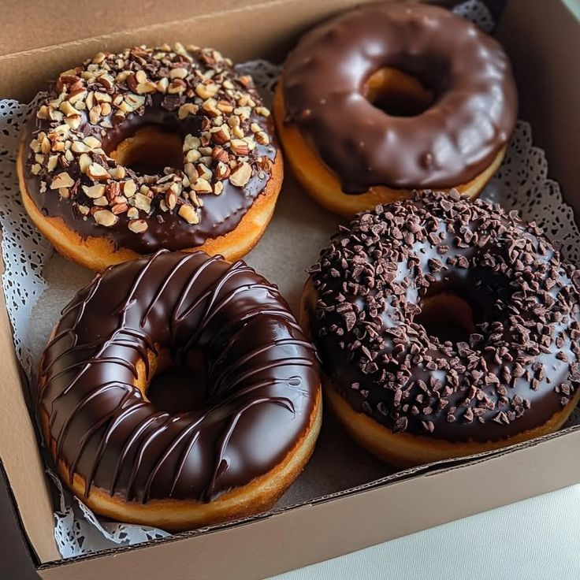

Our Products

Classic White Bread
Soft, fluffy, and perfect for sandwiches or toast.
Ingredients:- Flour
- Water
- Yeast
- Sugar
- Salt

Whole Wheat Bread
Wholesome goodness loaded with fiber and nutrients.
Ingredients:- Whole Wheat Flour
- Water
- Yeast
- Honey
- Salt

Multigrain Bread
Healthy grains in every slice for extra flavor and crunch.
Ingredients:- Multigrain Flour Mix
- Water
- Yeast
- Seeds (sunflower, flax, etc.)
- Salt
Scones
Light, crumbly, and delicious with tea or coffee.
Ingredients:- Flour
- Sugar
- Baking powder
- Butter
- Milk
- Eggs
Croissants
Flaky, buttery French pastry perfect for breakfast.
Ingredients:- Bread Flour
- Yeast
- Milk
- Sugar
- Salt
- Butter (lots!)

Donuts
Soft and sweet, topped with glaze or sugar.
Ingredients:- Flour
- Sugar
- Yeast
- Milk
- Eggs
- Butter
- Salt
- Oil (for frying)